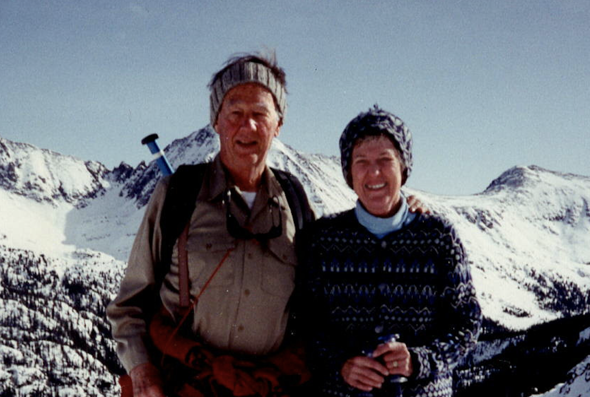

Ric and Dorry, throughout their long lives, have been extraordinary supporters and mentors for their wonderful family and their many colleages and friends. This github repository showcases their sterling qualities and diverse adventures.
Ric Bradley's footage from a 2-month back-country skiing adventure in Tuolomne Meadows (Yosemite National Park, CA, USA) just after World War II (Feb-Mar, 1947). Narration added by Ric Bradley in 2002.
Screenshots from the 1947 Tuolumne Meadows trip
Add photo of Ric and Dorry singing? or Ric at the piano? Or Mahani?
Music photo album (add Mahani, Dorry, and sheet music images?)
2016: Ric Receives Gresham Riley Award
From Ric's email on January 12, 2023, to Val:
The trip to Chile was a great success. No getting bounced out of reserved airline seats or anything like that. At the concert where Mahani played Grieg’s Piano Concerto (to a good sized audience) she also accompanied a soprano soloist in “The Road Not Taken” by a familiar CC perfessor. And with all that, we had nice weather at Puerto Varas, Helen’s new home. Jo and Larry accompanied me to Chile, and thanks to his fluency in Spanish we had no unhappy adventures. It was a delightful 3 weeks.
Photos from December 2022 trip to Chile[ Documents | Media | Galleries ]
The first version of this Github Pages site, and the underlying open source ricanddorry.github.io repository, was been created by Scott and Val Veirs in the latter half of 2022 and early 2023. Anyone is welcome to contribute to future versions.